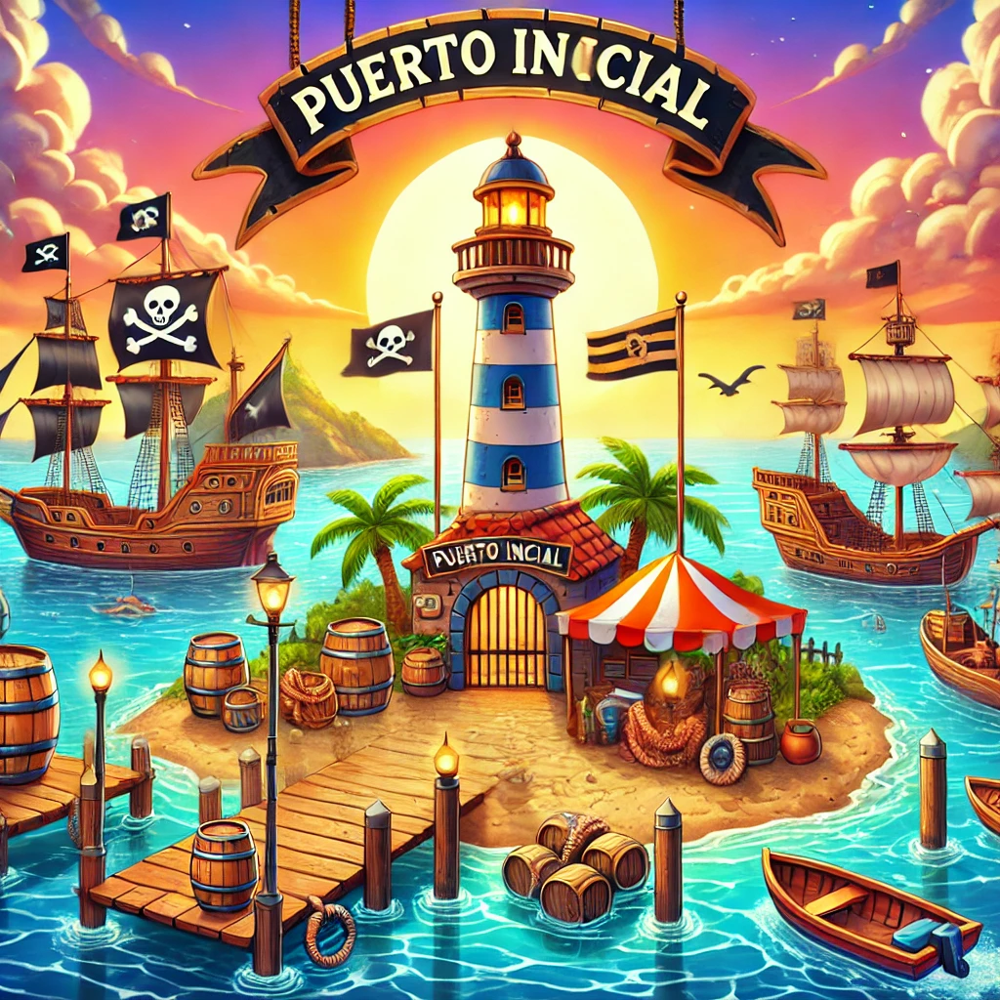

Niveles de la Travesía
Nivel 1: El Puerto Inicial
Conceptos básicos de redes.
Nivel 2: La Isla de los Enrutadores
Diseño y configuración de redes.
Nivel 3: La Tormenta de Datos

Monitorización y solución de problemas.
Nivel 4: El Tesoro Digital
Proyecto final.